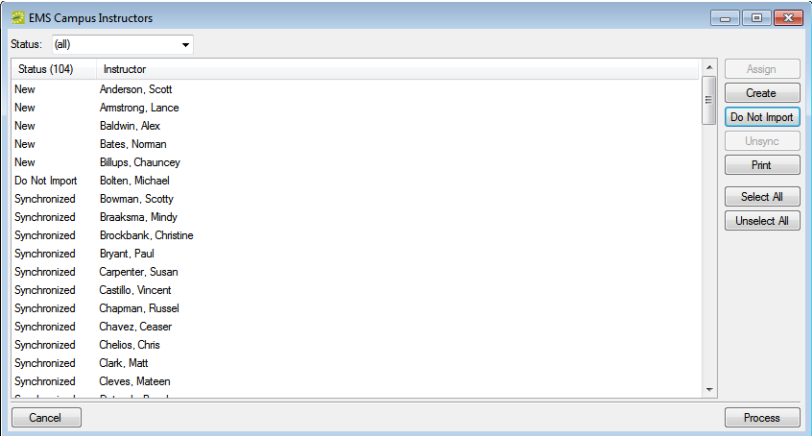

Synchronize Campus-Specific Data
When you synchronize your campus specific SIS data (Instructors, Course Types, Subjects, and Terms), all the SIS data items are flagged with a status of New. To create these items in your EMS database, you select the items, click Create, and then click Process.
Synchronize Campus-Specific Data
Tip: The following procedure is written from the perspective of synchronizing Instructors, but, by analogy, you can follow this procedure to synchronize course types, subjects, and terms.
- On the EMS Academic Planning menu bar, click Academic Planning > Configuration > Synchronize Instructors. The EMS Academic Planning Instructors window opens.

- Select the SIS data item, or CTRL-click to select the multiple data items that you are creating in your EMS database, click Create, and then click Process. A message opens indicating that the data items were successfully processed.
Tip: If you do not want to create an SIS data item in your EMS database, select the item, and then click Do Not Import.
- Click OK to close the message and return to the EMS Academic Planning Instructors window. The status of the data items is set to Synchronized to indicate that the SIS data has been synchronized.
- Click Cancel or Close (x) to close the window.